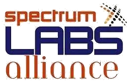

Mission
To mobilize resources and partnerships that accelerate youth-driven innovation, educational transformation, and climate resilience in underserved communities.

Spectrum TechLabs Alliance
Spectrum TechLabs Alliance is the nonprofit funding partner and co-architect of SXLA, providing financial, strategic, and technical support for youth-driven innovation.

To mobilize resources and partnerships that accelerate youth-driven innovation, educational transformation, and climate resilience in underserved communities.
A world where young innovators in underserved communities have equitable access to resources, mentorship, and technology to solve local challenges and create lasting impact.
Through its STA affiliate and global networks, SXLA engages donors, partners, and investors across North America, Europe, and the wider development community. STA was incorporated as a US 501(c)(3) in 2024.
United States address
11709 Longstreet Dr, Spotsylvania VA 22551
Phone
+1 831 224 2836